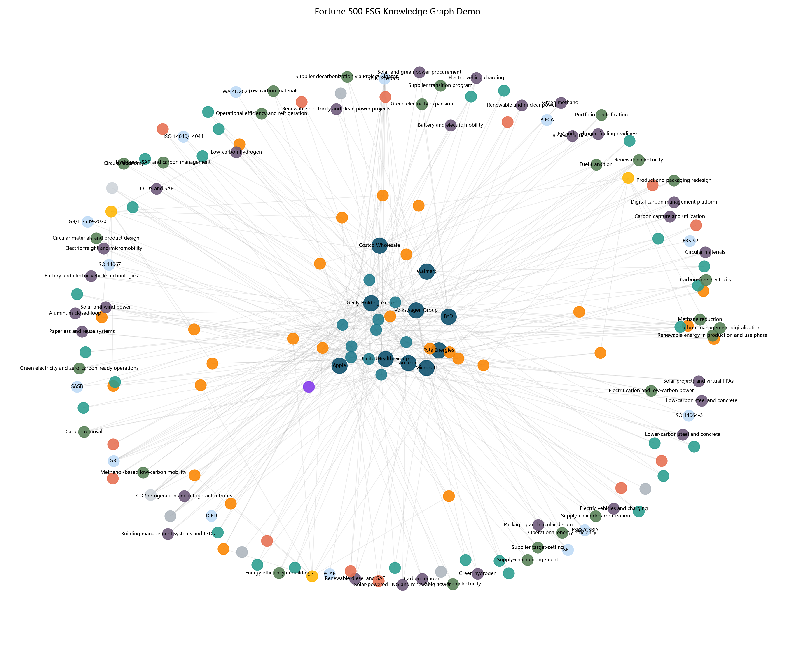
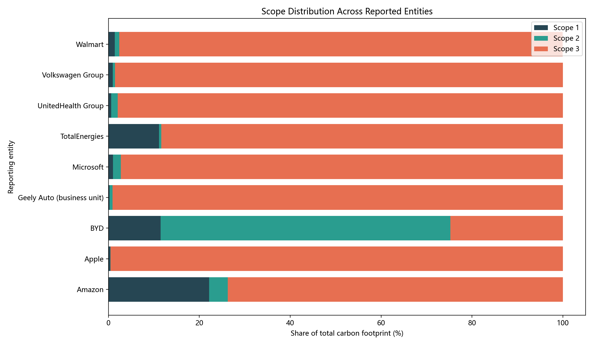
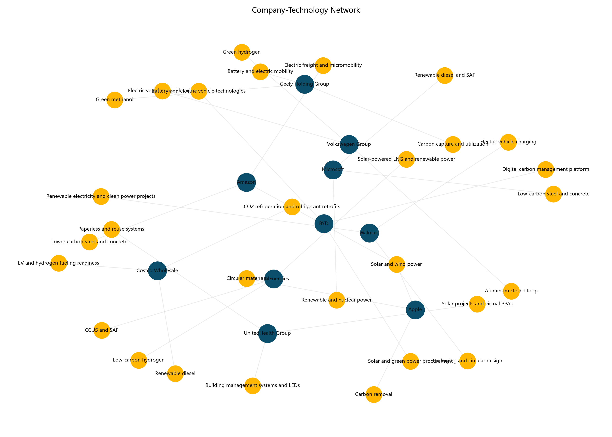
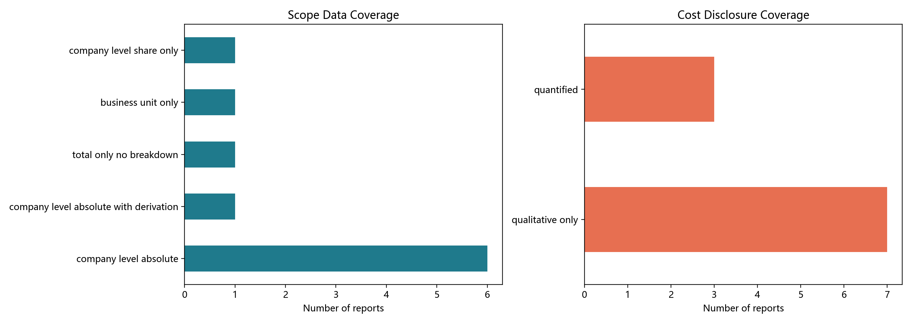
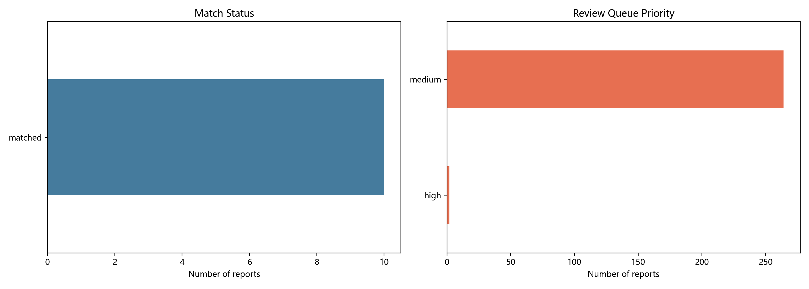

I built this demo site from Fortune 500 public reports to present an ESG knowledge graph focused on carbon emissions and decarbonization pathways.
Here I use a more direct visual form to show the relationships among ESG disclosure, emissions structure, technology routes, and decarbonization outcomes.
The current page presents a 10-report demonstration sample to show the structure, dimensions, and visual expression of the graph.
These metrics summarize the current demonstration sample and graph scale.
I focus on the core report information related to emissions, technologies, pathways, cost, and abatement effects.
ESG reports and disclosure standards
Total emissions and Scope 1, 2, 3 structure
Decarbonization pathways and technology types
Abatement effects, investment, and cost information
Cross-company comparison relationships
The visuals below are the core views I use to show the graph structure and sample characteristics.





To keep the structure clear and scientifically reliable, I separate concept entities, fact entities, and relation types.
I treat companies, standards, scopes, pathways, and technologies as relatively stable concept-layer entities.
I treat reports, emission records, targets, and impact metrics as report-scoped fact-layer entities so different years do not overwrite each other.
Emission nodes are separated by report, entity, and scope so time-specific disclosures remain traceable.
The graph is designed not only to connect entities, but also to preserve structured meaning about what a company disclosed and which pathways or technologies it referenced.
This section shows the current sample distribution in scope completeness and cost disclosure.
| Metric | Value |
|---|---|
| Company-level Scope 1/2/3 absolute data | 6 |
| Company-level data with derived values | 1 |
| Total disclosed without robust scope split | 1 |
| Business-unit level disclosure is richer | 1 |
| Only shares disclosed, no absolute values | 1 |
| Metric | Value |
|---|---|
| Cost or investment quantified | 3 |
| Only qualitative cost disclosure | 7 |